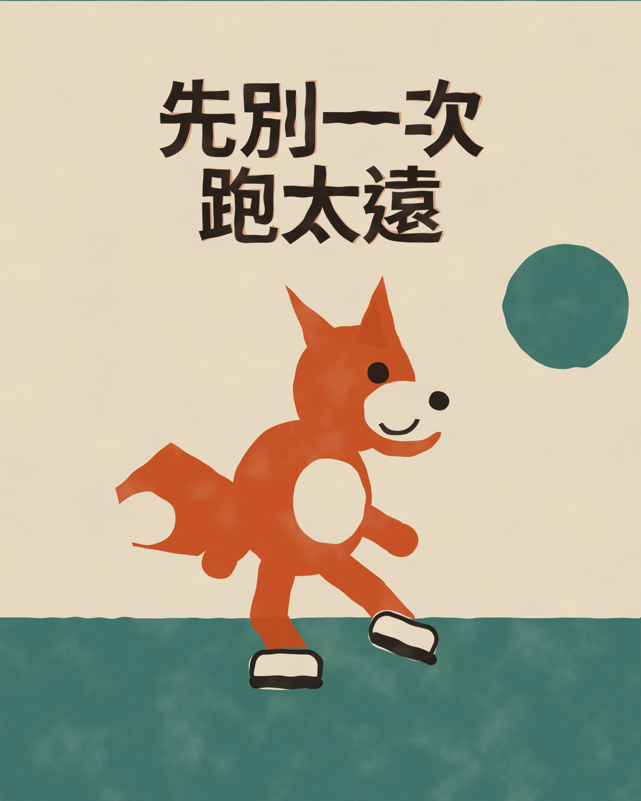

Fox Trot @FoxTrot
先別只看這一週跑量有沒有達標。2025 年一篇 5,205 人研究提醒：這一趟若比近 30 天最長跑再多超過約 10%，過度使用傷害發生率較高。觀察關聯，非因果。想跑得久，先別一次跳太遠。
回覆轉發喜歡
每日六平台A 日 · 傷害預防與恢復2026年11月11日（三）
以 2025 年 BJSM 超過 5,000 人的觀察研究為核心，說明單次距離比近 30 天最長跑再多超過約 10%，與較高的過度使用傷害發生率有關；這是關聯，不是保證。
Fox Trot @FoxTrot
Fox Trot
Fox Trot

Fox Trot
Fox Trot
Fox Trot 專欄
很多人習慣看「這一週跑了幾公里」。一篇 2025 年的大型觀察研究提醒：更值得先盯的，可能是「這一趟」有沒有突然跳太遠。
很多人習慣看「這一週跑了幾公里」。這當然有用，但 2025 年一篇發表於《英國運動醫學雜誌》（BJSM）的大型觀察研究想提醒：更值得先盯的，可能是「這一趟」有沒有突然比自己最近的最長距離跳太多。這不是保證不受傷的魔法數字，只是一個很好用的對照方式。
研究追蹤 5,205 名成年跑者，時間最長 18 個月，共記錄 588,071 次跑步。跑者平均約 46 歲，女性約佔 22%，資料主要來自歐洲與北美、並使用 Garmin 裝置的跑者。期間約 35% 的人回報跑步相關傷害，其中約 72% 屬過度使用傷害。
研究把「這一趟的距離」跟「過去 30 天最長的那一跑」比較，並以「少於或最多增加 10%」當參考組。小幅驟增（超過 10% 到 30%）的調整後危害比約 1.64（1.31–2.05）；中幅驟增（超過 30% 到 100%）約 1.52（1.16–2.00）；大幅驟增（增加超過一倍）約 2.28（1.50–3.48）。
白話來說：若最近最長只跑過 10 公里，這一趟直接跑 13 或 21 公里，觀察到的傷害發生率會比較高。這是關聯，不是「這樣跑就一定受傷」，也還沒有隨機對照試驗證明守住 10% 就能預防傷害。觀察關聯，非因果。作者也寫道，即使只增加 10% 以內，也不等於完全沒風險。
同一研究裡，常用的「急慢性負荷比」（ACWR）和「週與週跑量比」，並沒有出現「週跑量突然增加，風險就一定比較高」的結果。作者因此建議：除了看一週總量，也要把單次距離的突然跳升納入考量。
平日在河濱或公園跑 5 到 8 公里，週末突然想測半馬，或年底賽事將近一次把距離拉很開，就是典型的單次驟增。Fox Trot 的想法很單純：跑得久，比一次跑很遠更重要。狐狸再機靈，也不會今天從矮樹叢跳到對面山頭。
先記下最近 30 天最長那一跑，下一趟先以大約加一成當參考。也別把 10% 當成護身符：同一週連續加碼、恢復不夠，或碰到坡度、路面和睡眠變差，負擔仍可能過重。2026 年 10 月《聯合早報》訪談骨科醫師時提到，心肺適應通常比較快，軟骨、肌腱和骨骼需要更長時間；恢復應被視為訓練的一部分。肌肉酸痛常見，但關節疼痛若持續出現，就不該當作「再跑就會好」。
想跑得久，靠的不是某一天的英雄跑。今天少跳一步，之後才有更多步可以跑。
正文約 836 個中文字（含標點與英文數字約 1115 字元，不含空白）。
原始研究。5,205 名跑者、最長 18 個月觀察；單次距離相對近 30 天最長跑增加超過 10%，與較高過度使用傷害發生率有關。傷害為自我回報；研究為探索性觀察設計，作者亦指出預防效果仍待試驗確認。
同一篇 BJSM 研究的中文整理，並提醒應將結果作為指引而非僵化規則。
2025 年 7 月 7 日研究機構說明稿，協助核對研究背景與作者詮釋；非正式論文本文。
2026 年 10 月 27 日訪談。用來補充「恢復是訓練的一部分」「肌肉酸痛常見、關節疼痛持續則不宜忽視」的臨床提醒，並非同一項研究。原文為新加坡情境。
台灣運動醫學醫師對傷害預防策略回顧的整理，強調沒有單一解方、需個人化。今日主文未引用其中未經原文核對的具體百分比。
2026 年 11 月 6 日公開貼文提到當週跑量突增、隔天越野前選擇先休息。僅作當週跑步話題觀察，不當作科學依據。
2026 年 11 月 8 日公開貼文談到不追速度、不加跑量、不要盲目參賽。僅作話題觀察。
全文不做診斷、不保證療效或「守住 10% 就不會受傷」。各平台皆寫明疼痛持續應就醫或尋求物理治療師評估。
今日為 A 日（傷害預防與恢復），未列出任何賽事日期、地點或報名期限。
主證據已打開並核對 BJSM 原文頁（https://bjsm.bmj.com/content/59/17/1203）。危害比與樣本描述依原文；清楚寫成「關聯」而非因果，並保留作者對 10% 以內仍可能有風險、連續加碼與恢復、以及預防效果仍待試驗的提醒。ACWR 結果未被簡化成「週跑量不重要」。
配圖為 AI 生成的寫實紀實風格照片（清晨台北河堤步道；人物僅從背後、中遠距離入鏡，臉不可辨識），不是孔版插畫，也未使用他人照片。中文標語以 Noto Sans CJK TC Bold 由程式排在深色新聞卡上，重點字「跑太遠」為橘色 #FF7A1A。目視檢查：無真實或虛構的品牌 logo（含鞋、衣服、招牌、機車），無他人可辨識臉孔。Instagram 4:5，另有 16:9、1:1；頭像為同一場景的公寓與水塔裁切、無人入鏡。並通過寬邊 360px 可讀性檢查。
網頁為帶小標的說明文，含研究數字、限制與步驟；Threads 口語並以提問作結（500 字元內）；Instagram 為 4:5 圖＋caption＋10 個 hashtag；Facebook 偏轉分享語氣與生活例子；LinkedIn 從上班族趕工／產能管理切入；X 壓在 140 個中文字內，只留核心訊息。
瀏覽器無法自動複製時，請直接選取下方文字。